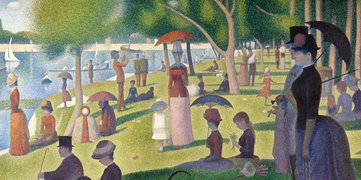

Outside research
Musicals, climbing, singing and songwriting, and games.
Musicals
I love musicals. One I love is Stephen Sondheim's Sunday in the Park with George, a musical built around Georges Seurat's painting A Sunday Afternoon on the Island of La Grande Jatte.


Climbing
I founded the MBZUAI Climbing Club and serve as its president. It has 50+ students, and I organize trips, community events, and activities, from venues and scheduling to safety and budget.
Singing and songwriting
I sing and write songs, and I'm drawn to the performing arts more broadly.
Games
I play Stardew Valley, Elden Ring, Cities: Skylines, Cyberpunk 2077, and more.